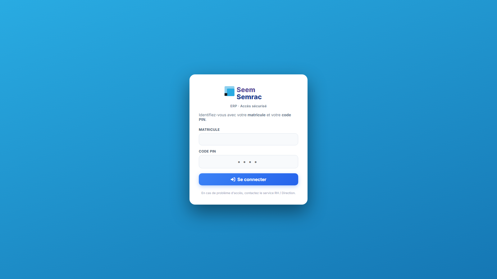
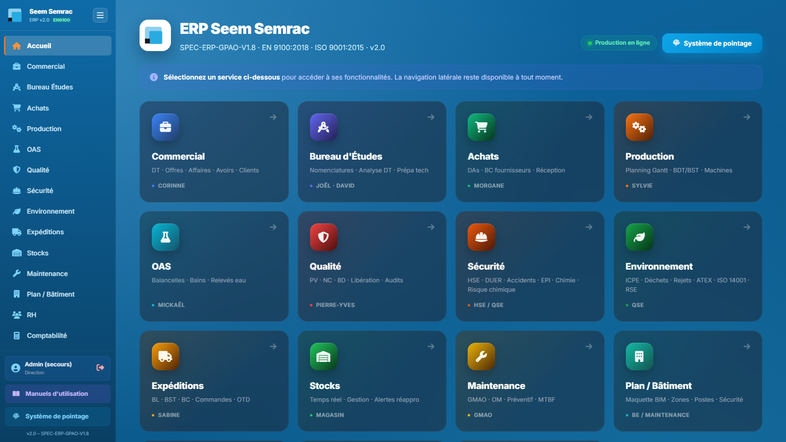
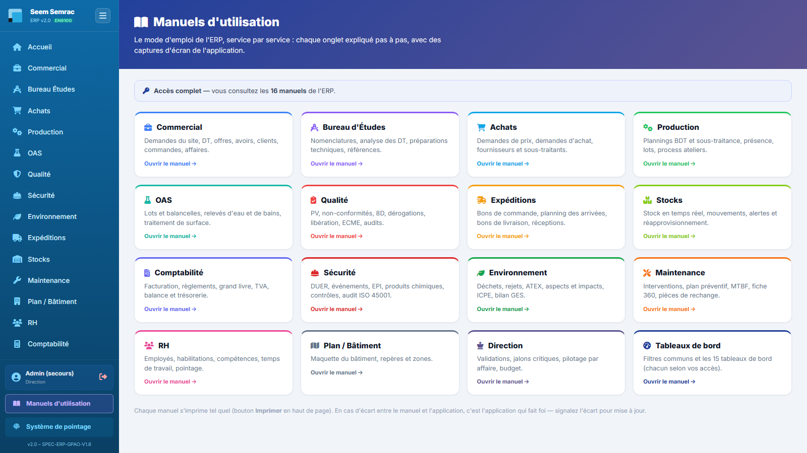

Un manuel par service, chaque onglet expliqué pas à pas avec des captures d'écran réelles de l'application. Commencez par la prise en main ci-dessous, puis ouvrez le manuel de votre service.
Valable dans toute l application : le bouton à trois petites barres horizontales, en haut de la barre latérale, replie le menu pour libérer toute la largeur de l écran ; un bouton identique apparaît en haut à gauche pour le réafficher. Le choix est mémorisé d une page à l autre.
📚 16 manuels de service🖼 Captures réelles de l'application🖨 Imprimable (Ctrl+P) par manuel
🔑
Prise en main — se connecter et naviguer
Avant tout : l'ERP est une application web. Elle s'ouvre dans un navigateur (Chrome, Edge, Firefox), au bureau comme à l'atelier — aucun logiciel à installer.
Se connecter
Ouvrez l'adresse de l'ERP dans le navigateur (celle fournie par la direction).
Saisissez votre matricule et votre code PIN personnel, puis validez.
En cas de PIN oublié : voir avec l'administrateur (Direction), qui peut le réinitialiser.

Connexion — matricule + code PIN personnel.
L'accueil et la navigation
Après connexion, l'accueil présente la grille des services. La barre latérale (sidebar), présente sur toutes les pages, permet de changer de service à tout moment. Chaque service s'organise en onglets (barre horizontale sous l'en-tête du service).

Accueil — un service = une carte ; la sidebar à gauche est toujours disponible.
Ouvrir les manuels depuis l'ERP
Ces manuels sont consultables directement dans l'application : le bouton « Manuels d'utilisation » se trouve en bas de la barre latérale, entre votre compte et le système de pointage. Vous n'y voyez que les manuels des services auxquels vous avez accès — la Direction les consulte tous.

Manuels d'utilisation — une carte par manuel accessible ; le bandeau rappelle l'étendue de vos accès. Chaque manuel s'ouvre dans l'ERP et s'imprime d'un clic.
Ce que vous voyez dépend de votre rôle
Chaque compte a un rôle (opérateur, qualité, achats, direction…) qui détermine les services visibles et les actions autorisées (lecture ou écriture).
Si un service ou un bouton n'apparaît pas, c'est en général une question de droits — pas une panne. Voir la Direction pour ajuster les autorisations.
Les données sont partagées en temps réel : ce que vous enregistrez est immédiatement visible par les autres services. En cas d'édition simultanée d'une même fiche, un verrou prévient le second utilisateur.
Astuce : chaque manuel est imprimable tel quel (Ctrl+P) — la mise en page s'adapte automatiquement à l'impression.
📚
Les manuels, service par service
Dans l'ordre du flux de l'entreprise : de la demande client jusqu'à la facturation, puis les fonctions support et le pilotage.
Flux principal — de la demande client à la livraison